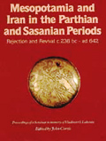

| |

Featured Book
Mesopotamia and Iran in the Parthian and Sasanian Periods
This volume presents the papers delivered at the fourth British Museum seminar in memory of Vladimir Lukonin, which dealt with relations between Mesopotamia and Iran in the Parthian and Sasanian periods.

Edited by John Curtis, The British Museum Press, 2000 ISBN: 0 7141 1146 5
Buy |
|
General
- Bowsher, J. Digging up the Past - Biblical Sites. Wayland, 1996
- British Museum Education Service The Assyrians Teachers' Guide - National Curriculum History KS2.
British Museum Education Service, BMP
- Corbishley, M. The Legacy of the Ancient World. The Near East. Macdonald Young Books, 1995
- Day, M. Great Events of Bible Times. Stories and History from the Old Testament. Simon & Schuster
Young Books, 1994
- Martin, H. Mesopotamia. Scholastic Publications. Junior Focus No. 67, 1993
- Oakes, L. Teaching the Assyrians for Key Stage 2. Historical Association, 1994
- Tubb, J. N. Bible Lands. Dorling Kindersley, 1991
Colouring & Activity Books
- Frankel, D. & Searight, A. Ashurbanipal and the Head of Teumman. BMP, 1977 [out of print]
- Oakes, L. The Assyrians Activity Book. BMP, 1994a
- Saunders, B. British Museum Paper - Pageants Bible Peoples. Jonathan Cape & BMP, 1988
- Temizsoy, I. & Günel, T. A Colouring Book of Anatolian Civilizations. Museum of Anatolian Civilizations
- Hittite Colouring Books. Archaeology Art Publications, Arkeoiojive Sanat Yayiniari
- The Ancient Near East: Colouring Book. Bellerophon Books, 1992
Other Books for Children
- Chubb, M. & Wyatt, J. An Alphabet of Assyria and Babylonia. Geoffrey Bles [out of print]
- McLeish, K. The Seven Wonders of the World. Cambridge University Press, 1985 (repr.1992)
- Moore, C. & Balit, C. Ishtar and Tammuz. Frances Lincoln, 1996
- Zeman, L. Gilgamesh the King. Heinemann, 1992
- Zeman, L. The Last Quest of Gilgamesh. Tundra Books,1995
- Zeman, L. The Revenge of Ishtar. Tundra Books, 1993
|
|


Tripod-footed painted ceramic vessel, from Chigha Sabz, Rumishkan region, western Iran.
Bronze Age, around 1500 BC
|